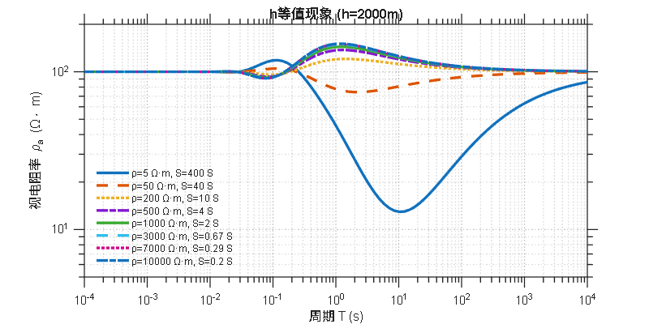

f = logspace(-4, 4, 100)'; T = 1./f; rho1_h = [100; 5; 100]; h1_h = [2000; 2000; 2000]; S1_h = h1_h(2)/rho1_h(2); rho2_h = [100; 50; 100]; h2_h = [2000; 2000; 2000]; S2_h = h2_h(2)/rho2_h(2); rho3_h = [100; 200; 100]; h3_h = [2000; 2000; 2000]; S3_h = h3_h(2)/rho3_h(2); rho4_h = [100; 500; 100]; h4_h = [2000; 2000; 2000]; S4_h = h4_h(2)/rho4_h(2); rho5_h = [100; 1000; 100]; h5_h = [2000; 2000; 2000]; S5_h = h5_h(2)/rho5_h(2); rho6_h = [100; 3000; 100]; h6_h = [2000; 2000; 2000]; S6_h = h6_h(2)/rho6_h(2); rho7_h = [100; 7000; 100]; h7_h = [2000; 2000; 2000]; S7_h = h7_h(2)/rho7_h(2); rho8_h = [100; 10000; 100]; h8_h = [2000; 2000; 2000]; S8_h = h8_h(2)/rho8_h(2); [appRho1_h, Phase1_h] = MT1DForward(rho1_h, h1_h, f); [appRho2_h, Phase2_h] = MT1DForward(rho2_h, h2_h, f); [appRho3_h, Phase3_h] = MT1DForward(rho3_h, h3_h, f); [appRho4_h, Phase4_h] = MT1DForward(rho4_h, h4_h, f); [appRho5_h, Phase5_h] = MT1DForward(rho5_h, h5_h, f); [appRho6_h, Phase6_h] = MT1DForward(rho6_h, h6_h, f); [appRho7_h, Phase7_h] = MT1DForward(rho7_h, h7_h, f); [appRho8_h, Phase8_h] = MT1DForward(rho8_h, h8_h, f); figure('Position', [100, 100, 800, 400]); ax2 = subplot(1, 1, 1); colors = lines(8); loglog(ax2, T, appRho1_h, 'Color', colors(1,:), 'LineWidth', 2.5, 'LineStyle', '-'); hold on; loglog(ax2, T, appRho2_h, 'Color', colors(2,:), 'LineWidth', 2.5, 'LineStyle', '--'); loglog(ax2, T, appRho3_h, 'Color', colors(3,:), 'LineWidth', 2.5, 'LineStyle', ':'); loglog(ax2, T, appRho4_h, 'Color', colors(4,:), 'LineWidth', 2.5, 'LineStyle', '-.'); loglog(ax2, T, appRho5_h, 'Color', colors(5,:), 'LineWidth', 2.5, 'LineStyle', '-'); loglog(ax2, T, appRho6_h, 'Color', colors(6,:), 'LineWidth', 2.5, 'LineStyle', '--'); loglog(ax2, T, appRho7_h, 'Color', colors(7,:), 'LineWidth', 2.5, 'LineStyle', ':'); loglog(ax2, T, appRho8_h, 'Color', colors(8,:), 'LineWidth', 2.5, 'LineStyle', '-.'); set(ax2, 'XScale', 'log', 'YScale', 'log'); xlabel('周期 T (s)', 'FontSize', 12, 'FontWeight', 'normal'); ylabel('视电阻率 \rho_a (\Omega\cdot m)', 'FontSize', 12, 'FontWeight', 'normal'); xlim([1e-4, 1e4]); ylim([5, 200]); grid(ax2, 'on'); set(ax2, 'GridLineStyle', ':', 'GridAlpha', 0.3, 'GridColor', [0.3, 0.3, 0.3]); set(ax2, 'Box', 'on', 'LineWidth', 1); set(ax2, 'TickDir', 'out', 'TickLength', [0.02, 0.02]); set(ax2, 'XMinorTick', 'on', 'YMinorTick', 'on'); set(ax2, 'FontSize', 11); lgd2 = legend(ax2, {sprintf('ρ=5 Ω·m, S=400 S'), ... sprintf('ρ=50 Ω·m, S=40 S'), ... sprintf('ρ=200 Ω·m, S=10 S'), ... sprintf('ρ=500 Ω·m, S=4 S'), ... sprintf('ρ=1000 Ω·m, S=2 S'), ... sprintf('ρ=3000 Ω·m, S=0.67 S'), ... sprintf('ρ=7000 Ω·m, S=0.29 S'), ... sprintf('ρ=10000 Ω·m, S=0.2 S')}, ... 'Location', 'southwest', 'FontSize', 9, 'Box', 'off'); set(lgd2, 'FontWeight', 'normal'); title('h等值现象 (h=2000m)', 'FontSize', 13, 'FontWeight', 'bold', 'FontName', 'Arial'); set(gcf, 'Color', 'white'); set(ax2, 'Color', 'white'); set(gcf, 'PaperPositionMode', 'auto');
